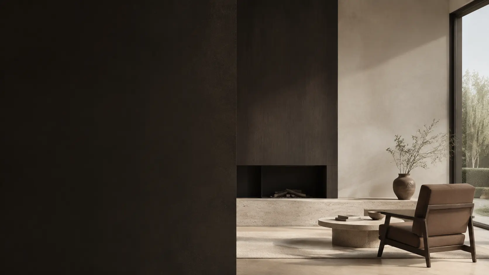
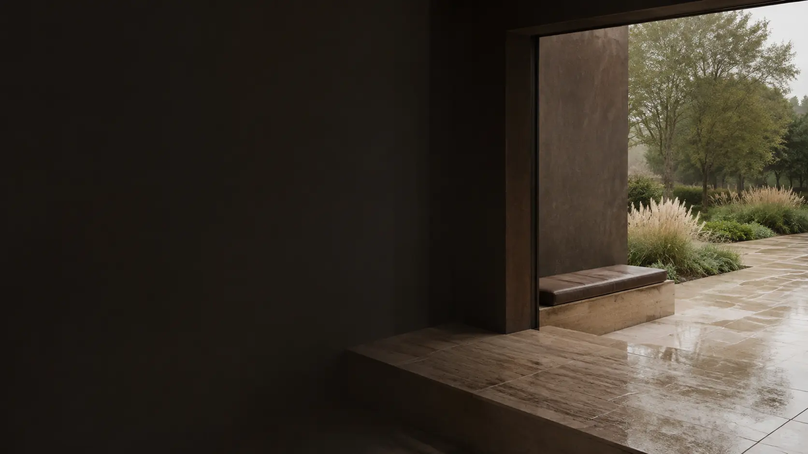
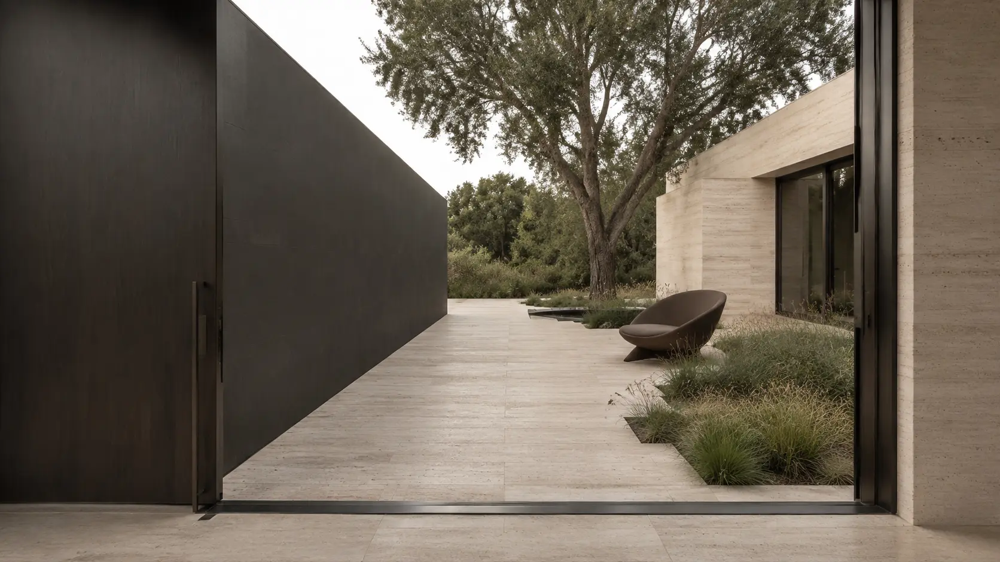

Pracownia architektoniczna / Jasło / od 2016
Wnętrza i ogród.
Jeden projekt.
Zobacz wybrane realizacje
Małgorzata Warywoda
Pracownia Oversize
Pracownia
Projektujemy wnętrza i krajobraz w jednej pracowni.
Pracownię Oversize prowadzi architekt Małgorzata Warywoda. Od 2016 roku zajmujemy się projektami wnętrz oraz otoczenia domu.
Pracujemy nad układem funkcjonalnym, materiałami, światłem i zabudową. Przy projektach krajobrazu dochodzą do tego tarasy, nawierzchnie, nasadzenia oraz najbliższe otoczenie budynku.
Opowiedz o swojej inwestycji ↗- Pracownię prowadzi
- Małgorzata Warywoda
- Siedziba
- Jasło
- Zakres
- Wnętrza / krajobraz / wsparcie realizacji
Wybrane prace
Cztery wybrane realizacje w jednym widoku.
Kliknięcie otwiera pełny kadr realizacji.

Wnętrze / ogród
Gdzie kończy się dom, a zaczyna ogród?
Przy projektach obejmujących budynek i jego otoczenie patrzymy również na to, co widać z wnętrza. Taras, nawierzchnie, nasadzenia i przejścia pomiędzy strefami mogą być projektowane razem z układem pomieszczeń.
Wnętrza i krajobraz
w jednej pracowni
Współpraca
Jak wygląda współpraca?
- 01
Rozmowa i materiały
Zaczynamy od inwestycji. Pytamy o lokalizację, etap prac, zakres projektu, sposób korzystania z domu oraz budżet. Przeglądamy rzuty, zdjęcia i materiały, które już masz.
- 02
Projekt
Pracujemy nad układem funkcjonalnym i kolejnymi decyzjami projektowymi. W zależności od zakresu przygotowujemy koncepcję, wizualizacje, rozwiązania materiałowe i projekty zabudowy.
- 03
Dokumentacja i realizacja
Przygotowujemy materiały potrzebne wykonawcom. Jeżeli zakres współpracy to obejmuje, jesteśmy dostępni również przy decyzjach pojawiających się podczas realizacji.

Światło w projekcie
Światło porządkuje odbiór wnętrza.
Już na etapie projektu bierzemy pod uwagę kierunek światła, materiały i relację wnętrza z ogrodem. Dzięki temu dom dobrze działa nie tylko na wizualizacji, ale też w codziennym użytkowaniu.
Zakres
W czym możemy pomóc?
01Wnętrza
+
Konsultacje, układ funkcjonalny, koncepcja, wizualizacje, projekty zabudowy meblowej oraz dokumentacja dla wykonawców.
Koncepcja · projekt wykonawczy · nadzór autorski02Krajobraz
+
Projektujemy otoczenie domu: ogród, taras, nawierzchnie, nasadzenia oraz małą architekturę. Zakres ustalamy na podstawie działki i etapu inwestycji.
Ogród · taras · nawierzchnie · nasadzenia03Wsparcie podczas realizacji
+
Pomagamy przejść od dokumentacji do wykonania. Konsultujemy decyzje pojawiające się podczas prac i odpowiadamy na pytania związane z projektem.
Nadzór · zestawienia · konsultacjeMasz dom, wnętrze albo ogród do zaprojektowania?
Napisz, gdzie znajduje się inwestycja, na jakim jest etapie i czego potrzebujesz. Jeżeli masz rzut, zdjęcia albo podstawowe materiały, przygotuj je przed pierwszą rozmową.